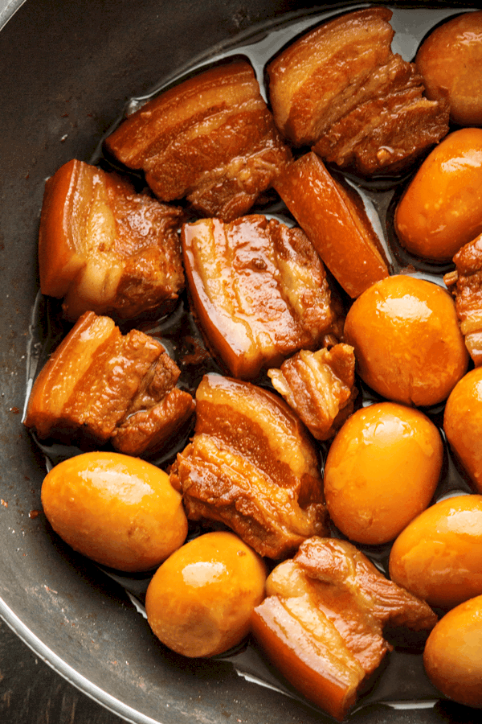

Thit Kho Recipe

Vietnamese caramelized pork, also known as Thit Kho.
Ingredients
- 5 cloves of garlic
- 2-3 tbsp. brown sugar
- Canola oil
- 2 lbs pork shoulder
- 90 ml fish sauce
- fresh chili peppers
Steps
- Add sugar and canola oil to pan at 9
- Once you start seeing a sizzle, change temperature to 6
- Once it starts to dissolve and bubble change to 2
- When homogenous, add garlic and mix till garlic is fully covered in the mixture
- Add pork and mix
- Pork juices should be releasing, adjust heat as needed. Juices should still be bubbling.
- Once pork is brown, reduce until there's some liquid on the bottom of pan
- Add fish sauce
- Add 1/2 cup of coconut water if desired
- Reduce heat to 5, simmer for at least 30 minutes
- Occasionally check and stir